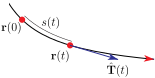

Section 1.6 Curves and their Tangent Vectors
The right hand side of the parametric equation \((x,y,z)=(1,1,0)+t\llt 1,2,-2\rgt\) that we just saw in Warning 1.5.3 is a vector-valued function of the one real variable \(t\text{.}\) We are now going to study more general vector-valued functions of one real variable. That is, we are going to study functions that assign to each real number \(t\) (typically in some interval) a vector \(\vr(t)\text{.}\) For example
might be the position 1 of a particle at time \(t\text{.}\) As \(t\) varies \(\vr(t)\) sweeps out a curve.
While in some applications \(t\) will indeed be “time”, it does not have to be. It can be simply a parameter that is used to label the different points on the curve that \(\vr(t)\) sweeps out. We then say that \(\vr(t)\) provides a parametrization of the curve.
Example 1.6.1. Parametrization of \(x^2+y^2=a^2\).
While we will often use \(t\) as the parameter in a parametrized curve \(\vr(t)\text{,}\) there is no need to call it \(t\text{.}\) Sometimes it is natural to use a different name for the parameter. For example, consider the circle 2 \(x^2+y^2=a^2\text{.}\) It is natural to use the angle \(\theta\) in the sketch below to label the point \(\big(a\cos\theta\,,\,a\sin\theta\big)\) on the circle.
That is,
is a parametrization of the circle \(x^2+y^2=a^2\text{.}\) Just looking at the figure above, it is clear that, as \(\theta\) runs from \(0\) to \(2\pi\text{,}\) \(\vr(\theta)\) traces out the full circle.
However beware that just knowing that \(\vr(t)\) lies on a specified curve does not guarantee that, as \(t\) varies, \(\vr(t)\) covers the entire curve. For example, as \(t\) runs over the whole real line, \(\frac{2}{\pi}\arctan(t)\) runs over the interval \((-1,1)\text{.}\) For all \(t\text{,}\)
is well-defined and obeys \(x(t)^2+y(t)^2=a^2\text{.}\) But this \(\vr(t)\) does not cover the entire circle because \(y(t)\) is always positive.
Example 1.6.2. Parametrization of \((x-h)^2+(y-k)^2=a^2\).
We can tweak the parametrization of Example 1.6.1 to get a parametrization of the circle of radius \(a\) that is centred on \((h,k)\text{.}\) One way to do so is to redraw the sketch of Example 1.6.1 with the circle translated so that its centre is at \((h,k)\text{.}\)
We see from the sketch that
is a parametrization of the circle \((x-h)^2+(y-k)^2=a^2\text{.}\)
A second way to come up with this parametrization is to observe that we can turn the trig identity \(\cos^2 t + \sin^2 t=1\) into the equation \((x-h)^2+(y-k)^2=a^2\) of the circle by
- multiplying the trig identity by \(a^2\) to get \((a\cos t)^2 +(a\sin t)^2 =a^2\) and then
- setting \(\ a\cos t=x-h\ \) and \(\ a\sin t=y-k\ \text{,}\) which turns \((a\cos t)^2 +(a\sin t)^2 =a^2\) into \((x-h)^2+(y-k)^2=a^2\text{.}\)
Example 1.6.3. Parametrization of \(\frac{x^2}{a^2}+\frac{y^2}{b^2}=1\) and of \(x^{2/3}+y^{2/3}=a^{2/3}\).
We can build parametrizations of the curves \(\frac{x^2}{a^2}+\frac{y^2}{b^2}=1\) and \(x^{2/3}+y^{2/3}=a^{2/3}\) from the trig identity \(\cos^2 t + \sin^2 t=1\text{,}\) like we did in the second part of the last example.
- Setting \(\ \cos t=\frac{x}{a}\ \) and \(\ \sin t=\frac{y}{b}\ \) turns \(\cos^2 t +\sin^2 t =1\) into \(\frac{x^2}{a^2}+\frac{y^2}{b^2}=1\text{.}\)
- Setting \(\ \cos t= \big(\frac{x}{a}\big)^{\frac{1}{3}}\ \) and \(\ \sin t=\big(\frac{y}{a}\big)^{\frac{1}{3}}\ \) turns \(\cos^2 t +\sin^2 t =1\) into \(\frac{x^{2/3}}{a^{2/3}}+\frac{y^{2/3}}{a^{2/3}}=1\text{.}\)
So
give parametrizations of \(\frac{x^2}{a^2}+\frac{y^2}{b^2}=1\) and \(x^{2/3}+y^{2/3}=a^{2/3}\text{,}\) respectively. To see that running \(t\) from \(0\) to \(2\pi\) runs \(\vr(t)\) once around the curve, look at the figures below.
The curve \(x^{2/3}+y^{2/3}=a^{2/3}\) is called an astroid. From its equation, we would expect its sketch to look like a deformed circle. But it is probably not so obvious that it would have the pointy bits of the right hand figure. We will not explain here why they arise. The astroid is studied in some detail in Example 1.1.7 of the CLP-4 text. In particular, the above sketch is carefully developed there.
Example 1.6.4. Parametrization of \(e^y=1+x^2\).
A very easy method that can often create parametrizations for a curve is to use \(x\) or \(y\) as a parameter. Because we can solve \(e^y=1+x^2\) for \(y\) as a function of \(x\text{,}\) namely \(y=\ln\big(1+x^2\big)\text{,}\) we can use \(x\) as the parameter simply by setting \(t=x\text{.}\) This gives the parametrization
Example 1.6.5. Parametrization of \(x^2+y^2=a^2\text{,}\) again.
It is also quite common that one can use either \(x\) or \(y\) to parametrize part of, but not all of, a curve. A simple example is the circle \(x^2+y^2=a^2\text{.}\) For each \(-a\lt x\lt a\text{,}\) there are two points on the circle with that value of \(x\text{.}\) So one cannot use \(x\) to parametrize the whole circle. Similarly, for each \(-a\lt y\lt a\text{,}\) there are two points on the circle with that value of \(y\text{.}\) So one cannot use \(y\) to parametrize the whole circle. On the other hand
provide parametrizations of the top half and bottom half, respectively, of the circle using \(x\) as the parameter, and
provide parametrizations of the right half and left half, respectively, of the circle using \(y\) as the parameter.
Example 1.6.6. Unparametrization of \(\vr(t)=(\cos t, 7-t)\).
In this example, we will undo the parametrization \(\vr(t)=(\cos t, 7-t)\) and find the Cartesian equation of the curve in question. We may rewrite the parametrization as
Note that we can eliminate the parameter \(t\) simply by using the second equation to solve for \(t\) as a function of \(y\text{.}\) Namely \(t=7-y\text{.}\) Substituting this into the first equation gives us the Cartesian equation
Curves often arise as the intersection of two surfaces. For example, the intersection of the sphere \(x^2+y^2+z^2=1\) with the plane \(y=x\) is a circle. The part of that circle that is in the first octant is the red curve in the figure below.
One way to parametrize such curves is to choose one of the three coordinates \(x\text{,}\) \(y\text{,}\) \(z\) as the parameter, and solve the two given equations for the remaining two coordinates, as functions of the parameter. Here are two examples.
Example 1.6.7.
The set of all \((x,y,z)\) obeying
is the circle sketched above. We can choose to use \(y\) as the parameter and think of
as a system of two equations for the two unknowns \(x\) and \(z\text{,}\) with \(y\) being treated as a given constant, rather than as an unknown. We can now (trivially) solve the first equation for \(x\text{,}\) substitute the result into the second equation, and finally solve for \(z\text{.}\)
If, for example, we are interested in points \((x,y,z)\) on the curve with \(z\ge 0\text{,}\) we have \(z=\sqrt{1-2y^2} \) and
is a parametrization for the part of the circle above the \(xy\)-plane. If, on the other hand, we are interested in points \((x,y,z)\) on the curve with \(z\le 0\text{,}\) we have \(z=-\sqrt{1-2y^2} \) and
is a parametrization for the part of the circle below the \(xy\)-plane.
Example 1.6.8.
The previous example was rigged so that it was easy to solve for \(x\) and \(z\) as functions of \(y\text{.}\) In practice it is not always easy, or even possible, to do so. A more realistic example is the set of all \((x,y,z)\) obeying
which is the blue curve in the figure
(Don't worry about how we make sketches like this. We'll develop some surface sketching technique in §1.7 below.) Substituting \(x^2=z-2y^2\) (from the second equation) into the first equation gives
or, completing the square,
If, for example, we are interested in points \((x,y,z)\) on the curve with \(y\ge 0\text{,}\) this can be solved to give \(y\) as a function of \(z\text{.}\)
Then \(x^2=z-2y^2\) also gives \(x\) as a function of \(z\text{.}\) If \(x\ge 0\text{,}\)
The other signs of \(x\) and \(y\) can be gotten by using the appropriate square roots. In this example, \((x,y,z)\) is on the curve, i.e. satisfies the two original equations, if and only if all of \((\pm x,\pm y, z)\) are also on the curve.
Subsection 1.6.1 Derivatives and Tangent Vectors
This being a Calculus text, one of our main operations is differentiation. We are now interested in parametrizations \(\vr(t)\text{.}\) It is very easy and natural to extend our definition of derivative to \(\vr(t)\) as follows.
Definition 1.6.9.
The derivative of the vector valued function \(\vr(t)\) is defined to be
when the limit exists. In particular, if \(\vr(t)=x(t)\hi + y(t)\hj + z(t)\hk\text{,}\) then
That is, to differentiate a vector valued function of \(t\text{,}\) just differentiate each of its components.
And of course differentiation interacts with arithmetic operations, like addition, in the obvious way. Only a little more thought is required to see that differentiation interacts quite nicely with dot and cross products too. Here are some examples.
Example 1.6.10.
Let
We are about to compute some derivatives. To make it easier to follow what is going on, we'll use some colour. When we apply the product rule
we'll use blue to highlight the factors \(f'(t)\) and \(g'(t)\text{.}\) Here we go.
gives
and
gives
and
gives
and
Of course these examples extend to general (differentiable) \(\va(t)\text{,}\) \(\vb(t)\text{,}\) \(\ga(t)\) and \(s(t)\) and give us (most of) the following theorem.
Theorem 1.6.11. Arithmetic of differentiation.
Let
- \(\va(t),\vb(t)\) be vector valued differentiable functions of \(t\in\bbbr\) that take values in \(\bbbr^n\) and
- \(\alpha,\beta \in \mathbb{R}\) be constants and
- \(\ga(t)\) and \(s(t)\) be real valued differentiable functions of \(t\in\bbbr\)
Then
Let's think about the geometric significance of \(\vr'(t)\text{.}\) In particular, let's think about the relationship between \(\vr'(t)\) and distances along the curve. The derivative \(\vr'(t)\) is the limit of \(\frac{\vr(t+h)-\vr(t)}{h}\) as \(h\rightarrow 0\text{.}\) The numerator, \(\vr(t+h)-\vr(t)\text{,}\) is the vector with head at \(\vr(t+h)\) and tail at \(\vr(t)\text{.}\)
When \(h\) is very small this vector
- has the essentially the same direction as the tangent vector to the curve at \(\vr(t)\) and
- has length being essentially the length of the part of the curve between \(\vr(t)\) and \(\vr(t+h)\text{.}\)
Taking the limit as \(h\rightarrow 0\) yields that
- \(\vr'(t)\) is a tangent vector to the curve at \(\vr(t)\) that points in the direction of increasing \(t\) and
- if \(s(t)\) is the length of the part of the curve between \(\vr(0)\) and \(\vr(t)\text{,}\) then \(\diff{s}{t}(t)=\big|\diff{\vr}{t}(t)\big|\text{.}\)
This is worth stating formally.
Lemma 1.6.12.
Let \(\vr(t)\) be a parametrized curve.
- Denote by \(\hat\vT(t)\) the unit tangent vector to the curve at \(\vr(t)\) pointing in the direction of increasing \(t\text{.}\) If \(\vr'(t)\ne 0\) then\begin{equation*} \hat\vT(t) = \frac{\vr'(t)}{|\vr'(t)|} \end{equation*}
-
Denote by \(s(t)\) the length of the part of the curve between \(\vr(0)\) and \(\vr(t)\text{.}\) Then
\begin{align*} \diff{s}{t}(t)&=\left|\diff{\vr}{t}(t)\right|\\ s(T)-s(T_0)&= \int_{T_0}^T \left|\diff{\vr}{t}(t)\right|\,\dee{t} \end{align*} - In particular, if the parameter happens to be arc length, i.e. if \(t=s\text{,}\) so that \(\diff{s}{s}=1\text{,}\) then\begin{equation*} \left|\diff{\vr}{s}(s)\right|=1\qquad \hat\vT(s) = \vr'(s) \end{equation*}
As an application, we have the
Lemma 1.6.13.
If \(\vr(t)=\big(x(t)\,,\,y(t)\,,\,z(t)\big)\) is the position of a particle at time \(t\text{,}\) then
and the distance travelled between times \(T_0\) and \(T\) is
\begin{align*} s(T)-s(T_0)&= \int_{T_0}^T \Big|\diff{\vr}{t}(t)\Big|\,\dee{t} = \int_{T_0}^T \sqrt{(x'(t)^2+y'(t)^2+z'(t)^2}\,\dee{t} \end{align*}Note that the velocity \(\vv(t) = \vr'(t)\) is a vector quantity while the speed \(\diff{s}{t}(t)=|\vr'(t)|\) is a scalar quantity.
Example 1.6.14. Circumference of a circle.
In general it can be quite difficult to compute arc lengths. So, as an easy warmup example, we will compute the circumference of the circle 3 \(x^2+y^2=a^2\text{.}\) We'll also find a unit tangent to the circle at any point on the circle. We'll use the parametrization
of Example 1.6.1. Using Lemma 1.6.12, but with the parameter \(t\) renamed to \(\theta\)
As 4 \(s(\Theta)\) is the arc length of the part of the circle with \(0\le\theta\le\Theta\text{,}\) the circumference of the whole circle is
which is reassuring, since this formula has been known 5 for thousands of years.
The formula \(s(\Theta)-s(0)=a\Theta\) also makes sense — the part of the circle with \(0\le\theta\le\Theta\) is the fraction \(\frac{\Theta}{2\pi}\) of the whole circle, and so should have length \(\frac{\Theta}{2\pi}\times 2\pi a\text{.}\) Also note that
so that the tangent to the circle at any point is perpendicular to the radius vector of the circle at that point. This is another geometric fact that has been known 6 for thousands of years.
Example 1.6.15. Arc length of a helix.
Consider the curve
where the standard basis vectors \(\hi = (1,0,0)\text{,}\) \(\hj=(0,1,0)\) and \(\hk =(0,0,1)\text{.}\) We'll first sketch it, by observing that
- \(x(t)=6\sin(2t)\) and \(y(t) =6\cos(2t)\) obey\begin{equation*} x(t)^2+y(t)^2 = 36 \sin^2(2t) + 36\cos^2(2t) = 36 \end{equation*}So all points of the curve lie on the cylinder \(x^2+y^2=36\) and
- as \(t\) increases, \(\big(x(t),y(t)\big)\) runs clockwise around the circle \(x^2+y^2=36\) and at the same time \(z(t) = 5t\) just increases linearly.
Our curve is the helix
We have marked three points of the curve on the above sketch. The first has \(t=0\) and is \(0\hi+6\hj+0\hk\text{.}\) The second has \(t=\frac{\pi}{2}\) and is \(0\hi-6\hj+\frac{5\pi}{2}\hk\text{,}\) and the third has \(t=\pi\) and is \(0\hi+6\hj+5\pi\hk\text{.}\) We'll now use Lemma 1.6.12 to find a unit tangent \(\hat\vT(t)\) to the curve at \(\vr(t)\) and also the arclength of the part of curve between \(t=0\) and \(t=\pi\text{.}\)
Example 1.6.16. Velocity and acceleration.
Imagine that, at time \(t\text{,}\) a particle is at
As \(|\vr(t) -h\,\hi-k\,\hj| = a\text{,}\) the particle is running around the circle of radius \(a\) centred on \((h,k)\text{.}\) When \(t\) increases by \(T\text{,}\) the argument, \(2\pi\frac{t}{T}\text{,}\) of \(\cos\left(2\pi\tfrac{t}{T}\right)\) and \(\sin\left(2\pi\tfrac{t}{T}\right)\) increases by exactly \(2\pi\) and the particle runs exactly once around the circle. In particular, it travels a distance \(2\pi a\text{.}\) So it is moving at speed \(\frac{2\pi a}{T}\text{.}\) According to Lemma 1.6.13, it has
Here are some observations.
- The velocity \(\vr'(t)\) has dot product zero with \(\vr(t) -h\,\hi-k\,\hj\text{,}\) which is the radius vector from the centre of the circle to the particle. So the velocity is perpendicular to the radius vector, and hence parallel to the tangent vector of the circle at \(\vr(t)\text{.}\)
- The speed given by Lemma 1.6.13 is exactly the speed we found above, just before we started applying Lemma 1.6.13.
- The acceleration \(\vr''(t)\) points in the direction opposite to the radius vector.
Exercises 1.6.2 Exercises
Exercises — Stage 1
Questions 1.6.2.1 through 1.6.2.5 provide practice with curve parametrization. Being comfortable with the algebra and interpretation of these descriptions are essential ingredients in working effectively with parametrizations.
1.
Consider the following time-parametrized curve:
List the three points \((-1/\sqrt{2},0)\text{,}\) \((1,25)\text{,}\) and \((0,25)\) in chronological order.
2.
At what points in the \(xy\)-plane does the curve \((\sin t, t^2)\) cross itself? What is the difference in \(t\) between the first time the curve crosses through a point, and the last?
3.
Find the specified parametrization of the first quadrant part of the circle \(x^2+y^2=a^2\text{.}\)
- In terms of the \(y\) coordinate.
- In terms of the angle between the tangent line and the positive \(x\)-axis.
- In terms of the arc length from \((0,a)\text{.}\)
4.
A circle of radius \(a\) rolls along the \(x\)-axis in the positive direction, starting with its centre at \((a,a)\text{.}\) In that position, we mark the topmost point on the circle \(P\text{.}\) As the circle moves, \(P\) moves with it. Let \(\theta\) be the angle the circle has rolled - see the diagram below.
- Give the position of the centre of the circle as a function of \(\theta\text{.}\)
- Give the position of \(P\) a function of \(\theta\text{.}\)
5.
The curve \(C\) is defined to be the intersection of the ellipsoid
and the plane
When \(y\) is very close to 0, and \(z\) is negative, find an expression giving \(z\) in terms of \(y\text{.}\)
6.
A particle traces out a curve in space, so that its position at time \(t\) is
for \(t \gt 0\text{.}\)
Let the positive \(z\) axis point vertically upwards, as usual. When is the particle moving upwards, and when is it moving downwards? Is it moving faster at time \(t=1\) or at time \(t=3\text{?}\)
7.
Below is the graph of the parametrized function \(\vr(t)\text{.}\) Let \(s(t)\) be the arclength along the curve from \(\vr(0)\) to \(\vr(t)\text{.}\)
Indicate on the graph \(s(t+h)-s(t)\) and \(\vr(t+h)-\vr(t)\text{.}\) Are the quantities scalars or vectors?
8.
What is the relationship between velocity and speed in a vector-valued function of time?
9. ✳.
Let \(\vr(t)\) be a vector valued function. Let \(\vr'\text{,}\) \(\vr''\) , and \(\vr'''\) denote \(\diff{\vr}{t}\text{,}\) \(\difftwo{\vr}{t}\) and \(\frac{\mathrm{d}^3\vr}{\mathrm{d}{t}^3}\text{,}\) respectively. Express
in terms of \(\vr\text{,}\) \(\vr'\) , \(\vr''\) , and \(\vr'''\text{.}\) Select the correct answer.
- \(\displaystyle (\vr'\times\vr'' )\cdot\vr'''\)
- \(\displaystyle (\vr'\times\vr'' )\cdot\vr + (\vr\times\vr' )\cdot\vr'''\)
- \(\displaystyle (\vr\times\vr' )\cdot\vr'''\)
- \(\displaystyle 0\)
- None of the above.
Exercises — Stage 2
10. ✳.
Find the speed of a particle with the given position function
Select the correct answer:
- \(\displaystyle |\vv(t)| = \big(e^{5t} + e^{-5t}\big)\)
- \(\displaystyle |\vv(t)| = \sqrt{10 + 5e^{t} + 5e^{-t}}\)
- \(\displaystyle |\vv(t)| = \sqrt{10 + e^{10t} + e^{-10t}}\)
- \(\displaystyle |\vv(t)| = 5\big(e^{5t} + e^{-5t}\big)\)
- \(\displaystyle |\vv(t)| = 5\big(e^t + e^{-t}\big)\)
11.
Find the velocity, speed and acceleration at time \(t\) of the particle whose position is \(\vr(t)\text{.}\) Describe the path of the particle.
- \(\displaystyle \vr(t)= a \cos t\,\hi + a\sin t\,\hj + ct\,\hk\)
- \(\displaystyle \vr(t)= a \cos t\sin t\,\hi + a\sin^2 t\,\hj + a\cos t\,\hk\)
12. ✳.
- Let\begin{equation*} \vr(t) = \left(t^2 , 3, \tfrac{1}{3} t^3 \right) \end{equation*}Find the unit tangent vector to this parametrized curve at \(t = 1\text{,}\) pointing in the direction of increasing \(t\text{.}\)
- Find the arc length of the curve from (a) between the points \((0, 3, 0)\) and \((1, 3, -\frac{1}{3})\text{.}\)
13.
Using Lemma 1.6.12, find the arclength of \(\vr(t)=\left(t,\sqrt{\frac{3}{2}}t^2,t^3\right)\) from \(t=0\) to \(t=1\text{.}\)
14.
A particle's position at time \(t\) is given by \(\vr(t)=(t+\sin t, \cos t)\) 7 . What is the magnitude of the acceleration of the particle at time \(t\text{?}\)
15. ✳.
A curve in \(\bbbr^3\) is given by the vector equation \(\vr(t) = \left(2t \cos t, 2t \sin t,\frac{t^3}{3}\right)\)
- Find the length of the curve between \(t = 0\) and \(t = 2\text{.}\)
- Find the parametric equations of the tangent line to the curve at \(t = \pi\text{.}\)
16. ✳.
Let \(\vr(t) = \big(3 \cos t, 3 \sin t, 4t\big)\) be the position vector of a particle as a function of time \(t \ge 0\text{.}\)
- Find the velocity of the particle as a function of time \(t\text{.}\)
- Find the arclength of its path between \(t = 1\) and \(t = 2\text{.}\)
17. ✳.
Consider the curve
- Compute the arc length of the curve from \(t = 0\) to \(t = \frac{\pi}{2}\text{.}\)
- Compute the arc length of the curve from \(t = 0\) to \(t = \pi\text{.}\)
18. ✳.
Let \(\vr(t)=\big(\frac{1}{3}t^3,\frac{1}{2}t^2,\frac{1}{2}t\big)\text{,}\) \(t\ge 0\text{.}\) Compute \(s(t\)), the arclength of the curve at time \(t\text{.}\)
19. ✳.
Find the arc length of the curve \(\vr(t) = \big(t^m\,,\, t^m\,,\, t^{3m/2}\big)\) for \(0 \le a \le t \le b\text{,}\) and where \(m \gt 0\text{.}\) Express your result in terms of \(m\text{,}\) \(a\text{,}\) and \(b\text{.}\)
20.
If a particle has constant mass \(m\text{,}\) position \(\vr\text{,}\) and is moving with velocity \(\vv\text{,}\) then its angular momentum is \(\vL=m(\vr\times\vv)\text{.}\)
For a particle with mass \(m=1\) and position function \(\vr=(\sin t, \cos t, t)\text{,}\) find \(\left|\diff{\vL}{t} \right|\text{.}\)
21. ✳.
Consider the space curve \(\Gamma\) whose vector equation is
This curve starts from the origin and eventually reaches the ellipsoid \(E\) whose equation is \(2x^2+2y^2+z^2=24\text{.}\)
- Determine the coordinates of the point \(P\) where \(\Gamma\) intersects \(E\text{.}\)
- Find the tangent vector of \(\Gamma\) at the point \(P\text{.}\)
- Does \(\Gamma\) intersect \(E\) at right angles? Why or why not?
22. ✳.
Suppose a particle in 3-dimensional space travels with position vector \(\vr(t)\text{,}\) which satisfies \(\vr''(t)=-\vr(t)\text{.}\) Show that the “energy” \(|\vr(t)|^2+|\vr'(t)|^2\) is constant (that is, independent of \(t\)).
Exercises — Stage 3
23. ✳.
A particle moves along the curve \(\cC\) of intersection of the surfaces \(z^2=12y\) and \(18x=yz\) in the upward direction. When the particle is at \((1,3,6)\) its velocity \(\vv\) and acceleration \(\va\) are given by
- Write a vector parametric equation for \(\cC\) using \(u=\frac{z}{6}\) as a parameter.
- Find the length of \(\cC\) from \((0,0,0)\) to \((1,3,6)\text{.}\)
- If \(u=u(t)\) is the parameter value for the particle's position at time \(t\text{,}\) find \(\diff{u}{t}\) when the particle is at \((1,3,6)\text{.}\)
- Find \(\difftwo{u}{t}\) when the particle is at \((1,3,6)\text{.}\)
24. ✳.
A particle of mass \(m = 1\) has position \(\vr_0 = \frac{1}{2}\,\hk\) and velocity \(\vv_0 =\frac{\pi^2}{2}\,\hi\) at time \(0\text{.}\) It moves under a force
- Determine the position \(\vr(t)\) of the particle depending on \(t\text{.}\)
- At what time after time \(t = 0\) does the particle cross the plane \(x = 0\) for the first time?
- What is the velocity of the particle when it crosses the plane \(x = 0\) in part (b)?
25. ✳.
Let \(C\) be the curve of intersection of the surfaces \(y=x^2\) and \(z=\frac{2}{3}x^3\text{.}\) A particle moves along \(C\) with constant speed such that \(\diff{x}{t} \gt 0\text{.}\) The particle is at \((0,0,0)\) at time \(t=0\) and is at \((3,9,18)\) at time \(t=\frac{7}{2}\text{.}\)
- Find the length of the part of \(C\) between \((0,0,0)\) and \((3,9,18)\text{.}\)
- Find the constant speed of the particle.
- Find the velocity of the particle when it is at \(\big(1,1,\frac{2}{3}\big)\text{.}\)
- Find the acceleration of the particle when it is at \(\big(1,1,\frac{2}{3}\big)\text{.}\)
26.
A camera mounted to a pole can swivel around in a full circle. It is tracking an object whose position at time \(t\) seconds is \(x(t)\) metres east of the pole, and \(y(t)\) metres north of the pole.
In order to always be pointing directly at the object, how fast should the camera be programmed to rotate at time \(t\text{?}\) (Give your answer in terms of \(x(t)\) and \(y(t)\) and their derivatives, in the units rad/sec.)
27.
A projectile falling under the influence of gravity and slowed by air resistance proportional to its speed has position satisfying
where \(\alpha\) is a positive constant. If \(\vr=\vr_0\) and \(\frac{d\vr}{dt}=\vv_0\) at time \(t=0\text{,}\) find \(\vr(t)\text{.}\) (Hint: Define \(\vu(t)=e^{\alpha t}\frac{d\vr}{dt}(t)\) and substitute \(\frac{d\vr}{dt}(t)=e^{-\alpha t}\vu(t)\) into the given differential equation to find a differential equation for \(\vu\text{.}\))
28. ✳.
At time \(t=0\) a particle has position and velocity vectors \(\vr(0)=\llt -1,0,0\rgt\) and \(\vv(0)=\llt 0,-1,1\rgt\text{.}\) At time \(t\text{,}\) the particle has acceleration vector
- Find the position of the particle after \(t\) seconds.
- Show that the velocity and acceleration of the particle are always perpendicular for every \(t\text{.}\)
- Find the equation of the tangent line to the particle's path at \(t=-\pi/2\text{.}\)
- True or False: None of the lines tangent to the path of the particle pass through \((0,0,0)\text{.}\) Justify your answer.
29. ✳.
The position of a particle at time \(t\) (measured in seconds s) is given by
- Show that the path of the particle lies on the cone \(z^2=x^2+y^2\text{.}\)
- Find the velocity vector and the speed at time \(t\text{.}\)
- Suppose that at time \(t=1\)s the particle flies off the path on a line \(L\) in the direction tangent to the path. Find the equation of the line \(L\text{.}\)
- How long does it take for the particle to hit the plane \(x=-1\) after it started moving along the straight line \(L\text{?}\)
30. ✳.
- The curve \(\vr_1(t)=\llt 1+t, t^2, t^3\rgt\) and \(\vr_2(t)=\llt \cos t, \sin t, t\rgt\) intersect at the point \(P(1,0,0)\text{.}\) Find the angle of intersection between the curves at the point \(P\text{.}\)
- Find the distance between the line of intersection of the planes \(x+y-z=4\) and \(2x-z=4\) and the line \(\vr(t)=\llt t, -1+2t, 1+3t\rgt\text{.}\)